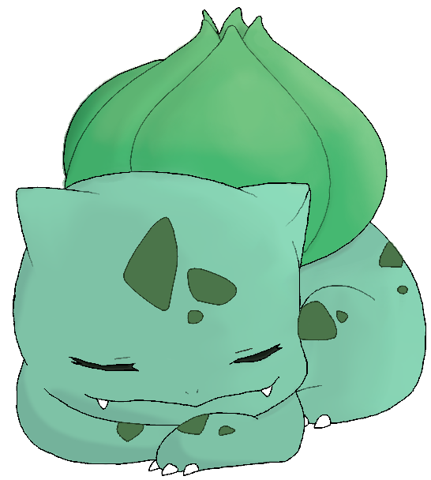

Notas de posgrado en óptica cuántica, computación cuántica y sistemas cuánticos abiertos
Material de maestría y doctorado organizado alrededor de los temas centrales de mi investigación y tesis.
Material de maestría y doctorado organizado alrededor de los temas centrales de mi investigación y tesis.
